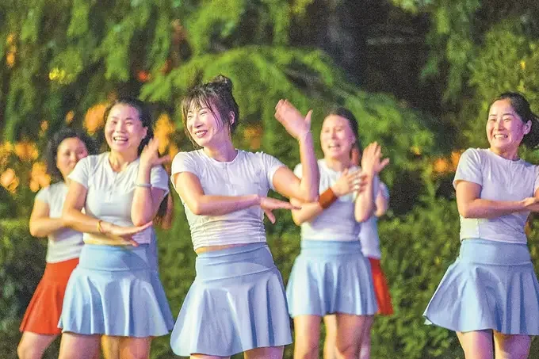
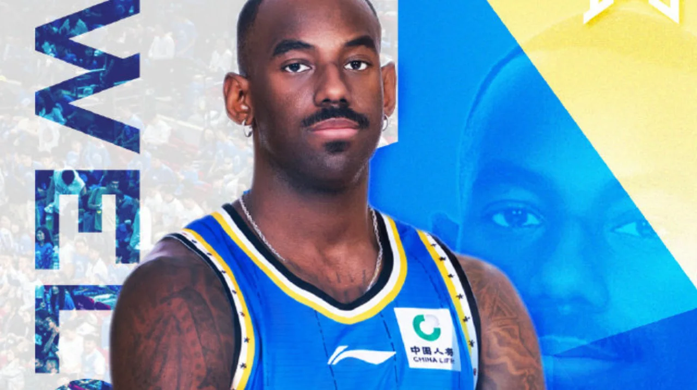
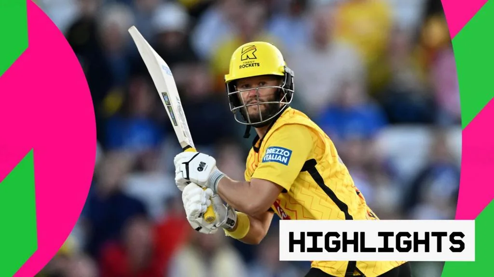
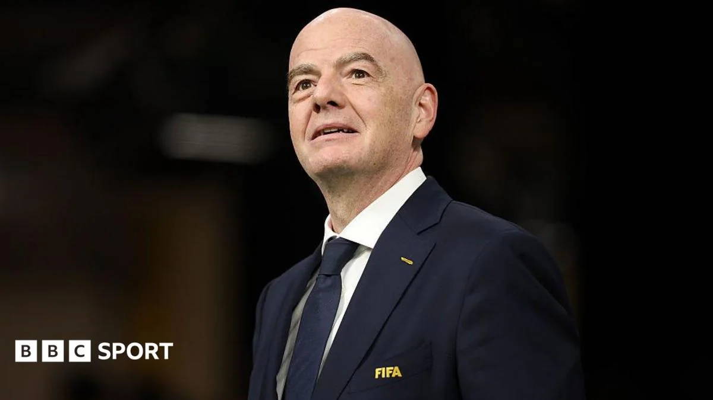

01
湖北全民健身“赶集会”点亮黄冈夏夜
一场把健身融入夜市的创新尝试，让运动变得触手可及。
近期傍晚，湖北黄冈的夏夜被一场特别的“赶集会”点亮。这不是普通的集市，而是全民健身的现场——据湖北日报报道，这场活动把健身项目搬进了夜市，让市民在逛街纳凉的同时，就能体验运动的乐趣。想象一下，你一边吃着烤串，一边能看到旁边的空地上有人在跳操、打太极，或者试试投篮机，这种“边逛边练”的场景，打破了健身房的围墙，也拉近了运动与日常生活的距离。活动组织者显然动了心思，把健身指导、趣味比赛和休闲娱乐打包在一起，让不同年龄层的人都能找到自己的节奏。对于很多平时不爱动的人来说，这种低门槛的参与方式，可能比办张健身卡更有效。
这种“赶集会”的形式，其实反映了全民健身推广的一种新思路：不再依赖强制性的运动任务，而是把运动嵌入到人们已有的生活场景中。夜市是夏夜人流量最大的地方，把健身项目放在这里，等于把运动送到了潜在参与者的眼皮底下。你不需要专门换运动服、跑一趟健身房，只需要在散步或购物时，顺便尝试一下。这种“顺便”的体验，往往能降低心理门槛，让那些对运动有畏难情绪的人迈出第一步。
从实际效果看，这种活动对社区凝聚力的提升也有帮助。当邻里在同一个场地运动、交流，社区的氛围会变得更融洽。而且，这类活动通常免费或低成本，对普通家庭来说，是一种零负担的健康投资。如果你所在的城市也有类似的“健身赶集”活动，不妨去凑个热闹，哪怕只是看看，也可能激发你尝试新运动的兴趣。毕竟，运动的第一步，往往是先让自己出现在运动现场。
伊恩的观察
如果你觉得去健身房太正式，不妨留意社区或公园里的这类“健身赶集”活动，零成本尝试，说不定能发现一项喜欢的运动。
02
全民健身“热辣滚烫”：从草原赛马到上海乒乓
全民健身日前后，各地活动百花齐放，运动成为生活方式。

全民健身日前后，全国上下掀起了一股运动热潮。人民日报、新华网等多家媒体报道了各地丰富多彩的健身活动：在内蒙古草原，赛马盛会展现了传统体育的魅力；在上海，乒乓球爱好者们用“乒乓响”迎接节日；还有更多地方组织了健步走、广场舞、篮球赛等。这些活动不只是比赛，更是全民参与的节日。值得注意的是，今年的活动更强调“乐享健康”，把运动与快乐结合，而不是追求竞技成绩。比如草原赛马，既是竞技，也是文化传承；上海乒乓，则让国球走进社区。这种多样化的供给，让不同兴趣、不同体能的人都能找到适合自己的运动方式，也呼应了全民健身国家战略的初衷——让运动成为生活习惯，而非一时兴起。
从这些活动中，我们可以看到全民健身的几个新趋势。一是运动场景的多元化，不再局限于体育场馆，而是延伸到草原、社区、夜市等日常空间。二是运动形式的融合化，传统与现代结合，比如赛马与旅游结合，乒乓球与社区活动结合。三是参与人群的广泛化，从儿童到老人，都能找到适合自己的项目。这种变化，得益于政策引导和基层创新，也反映了人们对健康生活方式的追求。
对普通人来说，这些活动的意义在于，它告诉你运动不必是严肃的、竞技的，而可以是有趣的、社交的。你不需要有运动天赋，只需要愿意尝试。比如，你可以从每天散步半小时开始，或者约朋友打场球，就能逐步养成习惯。全民健身日的热闹，不应该只是一天的狂欢，而应该成为你日常生活的起点。记住，运动的最大障碍不是身体，而是心理。当你把运动看作一种享受，而不是任务，你就能坚持下去。
伊恩的观察
别把运动想得太复杂，从每天散步半小时开始，或者约朋友打场球，就能逐步养成习惯。
03
CBA新赛季前瞻：首钢签下广厦双外援，冲击总冠军
北京首钢的引援动作，为新赛季的争冠格局增添了变数。

8月6日，据新浪体育报道，北京首钢男篮签下了此前效力于浙江广厦的两名外援布朗和桑普森。这一操作被外界解读为球队蓄力新赛季、冲击总冠军的信号。布朗和桑普森在广厦的表现有目共睹，他们的加盟将直接增强首钢的后场火力和内线防守。对于首钢来说，上赛季的成绩并不理想，这次引援显然是针对短板进行补强。不过，外援融入需要时间，化学反应如何，还要看教练组的调配。对CBA整体而言，强队之间的军备竞赛加剧，新赛季的竞争格局可能更加激烈。球迷们可以期待，新赛季的京沪大战、京粤对决，会因这些变化而更具看点。
从战术角度看，布朗是一名得分能力突出的后卫，他的突破和三分能为首钢提供稳定的外线火力；桑普森则是内线悍将，篮板和防守是他的强项。两人的组合，正好补强了首钢上赛季暴露出的进攻乏力和内线薄弱问题。但篮球是团队运动，外援的个人能力再强，也需要与本土球员磨合。首钢的国内球员如翟晓川、方硕等，能否与新外援产生化学反应，是决定球队上限的关键。
这笔引援也反映了CBA联赛的竞争趋势：各队都在加大投入，引进高水平外援，以提升竞争力。这对联赛的观赏性来说是好事，但也带来了一个问题：本土球员的成长空间可能被压缩。如何在追求成绩和培养新人之间取得平衡，是每支球队都需要思考的。对球迷而言，新赛季的CBA将更加精彩，但我们也应该关注本土球员的表现，毕竟中国篮球的未来，最终要靠他们。
伊恩的观察
看CBA时，除了关注球星，也可以留意球队的战术配合和外援融入情况，这会让你更懂门道。
04
The Hundred：火箭队轻松取胜，巴特勒创造历史
英格兰百球赛，火箭队延续强势，巴特勒再写纪录。

在英格兰的The Hundred板球赛中，特伦特火箭队以一场轻松胜利击败伯明翰凤凰队，继续高歌猛进。据BBC报道，这场比赛中，火箭队的整体表现稳健，攻防两端都压制对手。更值得一提的是，巴特勒在比赛中创造了历史，具体细节虽未详述，但足以让球迷兴奋。The Hundred是近年来板球改革的新赛制，每队100球，节奏更快，更吸引年轻观众。火箭队的胜利，一方面源于球员的个人能力，另一方面也体现了团队战术的执行力。对于板球运动而言，这样的赛事创新正在扩大其受众基础。
The Hundred的赛制设计，是为了适应现代观众的观赛习惯。传统板球比赛可能持续数天，而The Hundred压缩到几个小时，每队只有100球，节奏紧凑，悬念迭起。这种改革，让板球这项历史悠久的运动焕发了新的活力。巴特勒的纪录，具体是什么，报道没有细说，但可以推测是个人得分或击球效率方面的里程碑。他的表现，不仅是个人的荣耀，也为球队的胜利奠定了基础。
对于普通观众来说，The Hundred是一个很好的入门选择。板球规则复杂，但The Hundred简化了赛制，新手可以尝试观看，感受快节奏的乐趣。你不需要了解所有细节，只需要欣赏球员的击球、投球和防守，就能感受到运动的魅力。而且，这种短赛制的比赛，更适合忙碌的现代人，你可以在一个晚上看完一场比赛，而不必花费整天时间。如果你对板球感兴趣，不妨从The Hundred开始。
伊恩的观察
板球规则复杂，但The Hundred简化了赛制，新手可以尝试观看，感受快节奏的乐趣。
05
国际足联风波：因凡蒂诺道歉但留任，FIFA改革遇挫
因凡蒂诺为争议计划道歉，但获得执委会支持，继续掌舵FIFA。

国际足联主席因凡蒂诺在摩洛哥拉巴特召开的一次执委会会议后，为自己在“出售赛事股份给私人投资者”计划中的“错误”道歉，但得到了执委会的“全力支持”，将继续担任主席。据BBC报道，该计划因缺乏透明度而遭到包括欧足联在内的多方批评，甚至被形容为“肮脏的后台交易”。因凡蒂诺在会议后四小时，FIFA发布了一份支持声明。尽管他道歉，但批评声音并未平息，FIFA内部也有高层对此表示失望。这一事件反映了国际足联在治理和商业化之间的张力。对普通球迷而言，这类新闻可能显得遥远，但它影响着未来世界杯等赛事的举办方式和资金流向，进而影响观赛体验。
这个所谓的“FIFA Forward Enterprise”计划，简单来说，就是想把FIFA旗下的一些赛事商业权益打包卖给私人投资者，以获取巨额资金。但问题在于，这个计划缺乏透明度，被批评为“暗箱操作”。欧足联甚至公开表示对因凡蒂诺失去信心。因凡蒂诺的道歉，虽然承认了“错误”，但并没有改变他留任的事实。执委会的“全力支持”，意味着他暂时度过了信任危机，但内部的裂痕已经存在。
对普通球迷来说，这类新闻可能显得遥远，但它影响着未来世界杯等赛事的举办方式和资金流向，进而影响观赛体验。比如，如果FIFA引入私人投资者，可能会推高转播费用，最终转嫁给球迷。或者，赛事的举办地选择可能更倾向于商业利益，而非足球发展。因此，关注体育治理新闻，能帮助你理解赛事背后的商业逻辑，做出更理性的判断。作为球迷，我们不仅关注场上的比赛，也应该关注场外的博弈，因为那决定了我们能看到什么样的比赛。
伊恩的观察
关注体育治理新闻，能帮助你理解赛事背后的商业逻辑，做出更理性的判断。
无障碍文字记录
伊恩 你好，欢迎收听「伊恩每日·运动」。今天是2026年8月6日。这两天，国内全民健身的氛围特别浓，从湖北黄冈的夏夜赶集，到各地的全民健身日活动，都透着热气。与此同时，CBA那边传来重磅签约，国际足联也有一场风波。今天咱们就聊聊这些事儿，从身边的大众健身，到职业体育的台前幕后。
伊恩 先说国内。湖北黄冈举办了一场全民健身“赶集会”，把健身活动搬到了夏夜，现场有各种运动体验和表演。这种形式挺接地气，把健身变成了像赶集一样热闹的社交活动。我注意到，现在各地都在搞类似的创新，比如上海有“乒乓响”活动，草原上有赛马盛会。全民健身不再是单调的跑步、举铁，而是融入了地方特色和趣味性。这对普通人来说，意味着运动的门槛降低了，更容易找到适合自己的方式。
听众 伊恩，我平时工作忙，下班就想躺着，怎么才能坚持运动啊？
伊恩 这个问题很多人都有。其实，不必强求每天一小时，可以从碎片时间开始，比如下班后散步20分钟，或者在家做几组深蹲。关键是找到乐趣，就像黄冈的“赶集会”，把运动变成一种社交和娱乐。你也可以约朋友一起，互相监督，或者尝试一些新颖的课程，比如舞蹈、飞盘，让运动变得好玩。
伊恩 8月6日，湖北黄冈的夏夜被一场特别的“赶集会”点亮。这不是普通的集市，而是全民健身的现场。湖北日报的报道说，这场活动把健身器材、专业指导和趣味项目搬到了市民身边，让运动变得像逛街一样自然。同一天，搜狐网用“热辣滚烫”形容这股健身热潮，人民日报也发文倡导“全民健身 乐享健康”。这些报道背后，是一个清晰的事实：健身正在从“小众爱好”变成“大众日常”。
你可能会问，为什么今年夏天全民健身这么火？一个重要的推手是8月8日全民健身日。为了迎接这个节点，各地都在“整活”。上海举办了“乒乓响”活动，把国球玩出了新花样；草原上则有赛马盛会，把传统体育和现代健身结合起来。这些活动有个共同点：它们不要求你有多高的水平，而是让你先“玩起来”。
对普通人来说，这其实是个好消息。很多人觉得健身门槛高，要么需要办卡，要么需要装备，要么怕自己动作不标准被笑话。但你看这些活动，乒乓响可能就是在社区摆几张球台，赛马盛会更多是观赏和体验，赶集会则把体测、指导送到你面前。它们都在传递同一个信号：运动不必严肃，先迈出第一步最重要。
当然，全民健身的推进也面临现实挑战。比如，如何让活动不流于形式，如何让设施真正惠及长期坚持的人，而不是只在节日热闹一下。这些都需要持续投入和精细运营。但至少，当越来越多的人愿意在夏夜走出家门，去体验一次运动，这个趋势本身就是积极的。
我的判断是，全民健身的关键不在于你跑得多快、举得多重，而在于你找到一种让自己舒服的方式，并坚持下去。它可以是晚饭后的散步，也可以是周末的一场球赛。就像黄冈的赶集会，它不追求竞技成绩，只希望更多人动起来。所以，如果你还在犹豫，不妨就从今晚开始，下楼走一走，或者约朋友打场球。你会发现，运动带来的快乐，远比想象中简单。
伊恩 CBA休赛期的重磅消息来了：北京首钢签下了广厦的双外援布朗和桑普森，目标直指新赛季总冠军。这消息一出，球迷圈就炸了，毕竟这两位在广厦的表现有目共睹。
先说说布朗，他上赛季在广厦场均能砍下接近30分，是联盟里最犀利的得分手之一，突破、三分样样精通，关键时刻的大心脏更是让人印象深刻。桑普森则是内线支柱，篮板和防守是他的看家本领，场均两双的数据不在话下，还能送出几个盖帽。这两人一外一内，正好补上了首钢的短板。
首钢上赛季的问题很明显：进攻火力不足，关键时刻没人能稳定得分。布朗的加入，等于给球队装上了最强发动机；而桑普森的到来，则让内线防守和篮板有了保障。这波操作，堪称对症下药。
不过，签下强援只是第一步。外援融入球队需要时间，尤其是和国内球员的化学反应。布朗和桑普森在广厦打的是另一种体系，到了首钢，战术打法、队友习惯都要重新适应。而且，CBA的竞争越来越激烈，辽宁、广东、新疆这些强队都在补强，光靠两个外援就想夺冠，没那么简单。
咱们普通人看球，也常有个误区：以为球星堆砌就等于冠军。其实，篮球是五个人的运动，团队配合、防守强度、教练的临场调度，这些才是决定胜负的关键。就像咱们平时健身，光买一堆器械放在家里，不坚持练，身材也不会变好。
这笔签约，首钢的意图很明显，就是要增强火力，冲击总冠军。但最终能不能成，还得看教练怎么用，球员怎么磨合。新赛季，咱们拭目以待。
对咱们普通球迷来说，这消息也提醒我们：无论做什么事，光有好的条件还不够，还得靠团队协作和持续努力。就像健身，坚持才是王道。好了，今天就说这么多，咱们下期见。
听众 伊恩，外援在CBA的作用真有那么大吗？
伊恩 外援确实重要，尤其在关键球处理上。但CBA历史上，靠单打独斗的外援拿冠军的很少。比如广东宏远，他们强调整体，外援融入体系。首钢签下布朗和桑普森，不只是要得分，更要带动全队。如果只靠外援刷分，遇到强队可能会吃亏。所以，这笔签约是补强，但最终效果还要看教练怎么用。
伊恩 昨晚，英国板球 Hundred 联赛的赛场上，Trent Rockets 轻松击败了 Birmingham Phoenix，继续着他们的连胜势头。这场比赛最让人记住的，是 Buttler 创造了一项历史纪录——虽然具体数据我还没拿到，但现场的气氛已经说明了一切。Rockets 的胜利靠的是整体发挥，而 Phoenix 则暴露了进攻乏力的问题。
先说说 Hundred 这个赛制。它和传统板球不一样，每队只打 100 个球，比赛节奏快，大概两个多小时就能结束，特别适合新手观看。你不需要懂复杂的规则，只要看球飞向哪里、跑动得分，就能感受到那种紧张感。昨晚的比赛中，Rockets 的击球手们从一开始就掌控了局面，他们的跑动积极，击球果断，而 Phoenix 的投球手们似乎找不到节奏，让对手频频得分。
Buttler 的纪录具体是什么，我还在核实，但可以确定的是，他在 Phoenix 队中是个亮点。尽管球队输了，他的个人表现依然抢眼。这让我想到，在团队运动中，个人的闪光时刻往往能成为球迷记忆中的经典，即使结果不尽如人意。
为什么 Rockets 能赢？关键在于他们的整体配合。板球不是一个人的运动，投球、击球、防守，每个环节都需要默契。Rockets 在防守时站位精准，接球稳健，而 Phoenix 则在关键时刻出现失误，比如漏接球或者跑位错误，这些细节决定了比赛的走向。
对于普通人来说，Hundred 联赛其实是个很好的入门选择。你不需要了解板球的历史，只要打开电视，就能感受到那种现场的热闹。而且，这种短赛制也适合忙碌的上班族，下班后看一场，既放松又刺激。如果你对板球感兴趣，不妨从 Hundred 开始，慢慢你会发现，这项运动其实很有趣。
当然，Phoenix 的失利也提醒我们，任何比赛，进攻乏力都是致命伤。就像我们平时健身，如果只注重力量训练而忽视有氧，体能就会跟不上。同样，在团队运动中，如果只靠一两个明星球员，而整体配合不默契，很难走远。
后续，Rockets 能否延续连胜？Phoenix 又会如何调整？这些都是值得关注的看点。而对于我们普通人，从这场比赛里，我学到的是：无论做什么，团队合作和整体规划，永远比单打独斗更重要。
听众 伊恩，板球规则那么复杂，我们怎么才能看懂？
伊恩 确实，板球规则对新手不太友好。但 Hundred 联赛做了简化，每队只有100球，节奏快很多。你不需要懂所有细节，先看比分怎么涨，哪个队进攻更猛就行。就像看棒球，先感受气氛，慢慢就懂了。而且这种短赛制很适合电视转播，画面紧凑，容易上手。
伊恩 国际足联主席因凡蒂诺，最近摊上事了。他提出一个叫“国际足联前进企业”的计划，想把一部分赛事股份卖给私人投资者，说白了就是拉投资、换现金。但这个计划还没落地就夭折了，因为批评声太大。欧足联直接说这是“肮脏、幕后、不透明的交易”。连国际足联内部都看不下去，秘书长格拉斯特伦在给员工的备忘录里写道，这是一连串“令人遗憾、该受指责的事件”。
8月5号，因凡蒂诺把管理层叫到摩洛哥拉巴特的国际足联非洲办公室开会。四个小时后，国际足联发声明，说因凡蒂诺为“错误”道歉，但董事会给他“全力支持”，他继续当主席。
你可能会问，这个计划到底想干嘛？简单说，国际足联想把旗下一些赛事的商业权益打包卖给私人投资者，比如世界杯的转播权、赞助权这些。好处是短期内能拿到一大笔钱，但坏处是，这些核心资产的控制权可能落到私人手里，长期来看，国际足联自己说了不算了。而且整个过程据说没怎么公开，外界根本不知道细节，难怪被骂“不透明”。
因凡蒂诺道歉了，但没下台。这背后其实是国际足联内部治理的老问题：权力太集中，决策不透明。这次事件给普通球迷的提醒是，体育管理需要透明和问责。你喜欢的球队、你关注的赛事，背后那些管理者，他们的决定会直接影响比赛能不能办、怎么办。如果连国际足联这种顶级机构都这么折腾，那基层体育组织的管理就更得盯着点。
好在，这个计划已经叫停了，至少短期内不会再有类似操作。但接下来，因凡蒂诺怎么修复和欧足联的关系，怎么让国际足联的决策更公开，这才是真正的考验。咱们球迷，就等着看后续吧。
伊恩 今天这几件事，看似不相关，但都指向一个主题：体育的活力来自参与和信任。全民健身的兴起，让运动成为生活的一部分；职业球队的引援，是为了在竞争中取胜；而国际足联的风波，则提醒我们，体育组织的决策需要公开透明。对我们普通人来说，不管是在黄冈赶集，还是看CBA，或是关注国际足联，都能感受到体育的多样性和复杂性。
伊恩 今天的「伊恩每日·运动」就到这里。明天继续聊，我们不见不散。